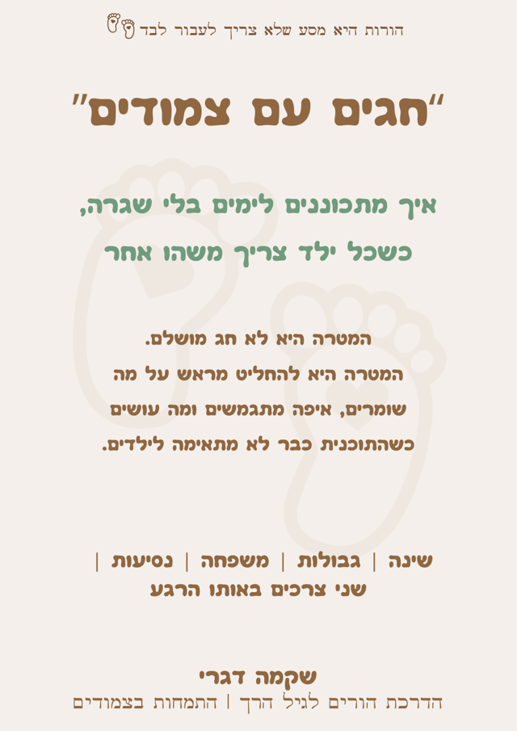

להגיע לחגים עם פחות אלתורים ויותר החלטות שעושות סדר
ארוחות מעבר לשעת השינה, נסיעות ארוכות, משפחה עם גבולות אחרים ושני ילדים שלא תמיד צריכים את אותו הדבר.
״חגים עם צמודים״ הוא מדריך קצר וממוקד שאפשר לקרוא תוך שעה ולהגיע לחג עם החלטות ברורות לגבי מה שומרים, איפה מתגמשים ומה עושים כשהתוכנית כבר לא מתאימה לילדים.
אני רוצה להגיע לחגים מוכנים יותר · 36 ₪
פעמיים ח״י לשנה החדשה

אם גם אצלכם החג נראה לפעמים ככה...
- הארוחה רק מתחילה ואחד הילדים כבר גמור מעייפות.
- אחד נהנה מההמולה והשני נצמד אליכם ורוצה ללכת.
- שניהם צריכים אתכם, אבל כל אחד צריך משהו אחר.
- מישהו אומר: ״זה ערב חג, תמשכו אותו עוד קצת״.
- הגבולות סביב שינה, אוכל ומסכים נראים אחרת בבית המארח.
- עוד לפני שהגעתם, הנסיעה כבר הוציאה את כולם מאיזון.
עם ילדים צמודים, לא תמיד אפשר להתאים את הערב לצורך של שניהם באותו הזמן. בעבודה עם משפחות לילדים צמודים חוזרת שוב ושוב אותה שאלה:
״איך נותנים מקום לשני הילדים, בלי לנסות להתפצל לשניים?״
המדריך נבנה בדיוק בשביל הרגעים האלה.
במקום להחליט הכול כשהילדים כבר עייפים
המדריך יעזור לכם:
- לבחור מראש אילו עוגנים חשוב לשמור.
- להחליט מתי להציב גבול ומתי להתגמש.
- להתאים את השינה והתנומות לשינויים בשגרה.
- להתמודד כשילד אחד נהנה והשני כבר מוצף.
- לחלק תפקידים בין ההורים לפני שמגיע רגע העומס.
- לדעת איך להגיב להערות מבני המשפחה.
- להיערך לנסיעות ארוכות עם הילדים.
- לזהות מתי נכון לקצר, להתפצל או ללכת הביתה.
כל זה במדריך קצר ומעשי, שאפשר לקרוא תוך שעה ולחזור רק לחלק שצריך ברגע האמת.
מה מחכה לכם במדריך?
לפני שיוצאים
שלוש החלטות קטנות שיחסכו התלבטויות בתוך החג.
שני ילדים, שני צרכים
מה עושים כשאחד רוצה להישאר והשני כבר לא מסוגל.
שינה מחוץ לשגרה
איך שומרים על העוגנים המוכרים ומתי כדאי להתגמש.
גבולות בבית של אחרים
מתי לשמור על הגבול, מתי לשחרר ואיך להתמודד עם הערות מהסביבה.
הדרך לשם ובחזרה
רעיונות פשוטים לנסיעות עם שני ילדים קטנים.
דף היערכות ובנק משפטים
החלטות שכדאי לקבל מראש ומשפטים שאפשר להשתמש בהם ברגע האמת.
מה באמת חשוב לכם בחג
המטרה היא לבחור מראש מה באמת חשוב לכם, למה הילדים שלכם מסוגלים כרגע ואיפה אפשר לשחרר, במקום לשאוף לחג שבו הילדים יישבו יפה, יאכלו, יחייכו ויירדמו בזמן.
לפעמים נכון לצאת לפני הקינוח. לפעמים אחד ההורים ירדים והשני יישאר. ולפעמים הבחירה המתאימה תהיה להגיע לזמן קצר או להתפצל.
כשזה קורה, זיהיתם מה המשפחה שלכם צריכה עכשיו ובחרתם בהתאם.
למי המדריך מתאים?
- להורים לילדים צמודים, בעיקר בגילי לידה עד שלוש.
- למי שעומדים בפני ארוחות, נסיעות וימים בלי השגרה המוכרת.
- למי שרוצים לשמור על גבולות בלי להפוך כל שינוי למאבק.
- למי שאין זמן לעוד מדריך ארוך ורוצים כלים שאפשר להבין וליישם במהירות.
*חלק מהכלים יתאימו גם למשפחות עם כמה ילדים קטנים שאינם צמודים.

אם עוד לא הכרנו
שקמה דגרי
אני שקמה דגרי, מדריכת הורים ויועצת שינה מוסמכת לגיל הרך, בוגרת מצטיינת בהכשרות להדרכת הורים ולייעוץ שינה בגישה ההוליסטית, ואמא לצמודים בהפרש של שנה וחודש.
מתוך החיים עם שני קטנטנים והעבודה עם משפחות יצרתי את שיטת ״הורות בדאבל״, דרך שעוזרת להבין מה כל ילד צריך ולדעת איך להגיב גם כששניהם צריכים אתכם יחד.
אני בעלת תואר ראשון במדעי ההתנהגות ותואר שני בייעוץ ארגוני, ומנהלת את קהילת ״אמאל׳ה צמודים״, שבה חברים יותר מ־300 הורים. עוד עליי · הליווי האישי
שאלות שאולי עלו לכם
האם המדריך מתאים רק לראש השנה?
לא. המדריך מתאים לכל חג, חופשה, אירוח משפחתי או יציאה ארוכה מהשגרה: סוכות, פסח, סופי שבוע אצל המשפחה ונסיעות.
לאילו גילאים הוא מתאים?
בעיקר להורים לילדים צמודים בגילי לידה עד שלוש. חלק מהכלים יתאימו גם למשפחות עם כמה ילדים קטנים שאינם צמודים.
אני גם ככה בעומס, איך אספיק לקרוא אותו לפני החג?
המדריך קצר ובנוי לפי שלבים: לפני שיוצאים, בזמן הארוחה, שינה, הדרך. אפשר לקרוא אותו תוך שעה, ובחג עצמו לחזור רק לדף ההיערכות ולבנק המשפטים.
האם צריך לוותר על השגרה בחגים?
לא על כולה. המדריך עוזר לבחור מראש אילו עוגנים חשוב לשמור ואיפה אפשר להתגמש, כדי שהשינוי יהיה מתוכנן ולא מאולתר.
באיזה פורמט מקבלים את המדריך?
כקובץ דיגיטלי שנפתח בטלפון ובמחשב. לאחר התשלום הוא נשלח לכתובת הדוא״ל שמסרתם.
״חגים עם צמודים״
מדריך דיגיטלי קצר ומעשי להיערכות לחגים עם שני ילדים קטנים. מתאים לראש השנה, לסוכות ולכל אירוח או נסיעה בתשרי.
36 ₪פעמיים ח״י לשנה החדשה · מחיר השקה עד מוצאי שמחת תורה, 3.10
רוצים תזכורת? ההצעה תיפתח קודם בקהילהעד אז, הגרסה המקוצרת פתוחה לכולם.